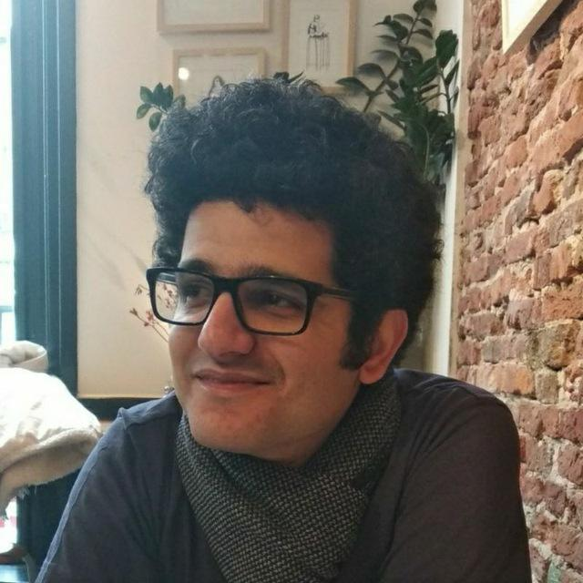

Mohsen Ghafoorian
I am a Sr. Staff ML researcher, technical team lead and manager at Qualcomm working on augmented/virtual reality applictions. Prior to this
I was a senior deep leaning R&D engineer, technical team-lead and line-manager at TomTom, working on automated generation of high-definition maps for autonomous driving. I recieved my Ph.D in machine learning from Radboud University, the Netherlands, where I worked on development of machine learning algorithms for detection and characterization of neuro-degenerative diseases (Oct. 2013 - June 2017).
My Ph.D. project was in collaboration between the Machine Learning and the
Diagnostic Image Analysis Groups and was under the supervision of Dr. Bram Platel, Prof. Elena Marchiori, Prof. Nico Karssemeijer and Prof. Tom Heskes.
Reseach Interests
• Machine Learning/computer vision Short Biography
Ph.D. in Machine Learning for Medical Image Analysis at Radboud University, 2013-2017. |
News:• Feb. 2025: Our paper AnyMap is accepted at CVPR25.• Dec. 2024: I was honored to receive the AIXR award for the XR company of the year on behalf of Qualcomm! An image is available here. • July 2024: Our paper FastCAD is accepted at ECCV24. • July 2024: Our paper Interrogate is accepted at BMVC24. • Dec. 2023: I got promoted to Senior Staff Engineer at Qualcomm. • July 2023: Two papers (DG-Recon, 3DDistillation ) accepted at ICCV23. • July 2021: I joined Qualcomm as a staff engineer to work on extended reality. • May 2021: Our research paper on weakly-supervised semantic segmentation stemming from the AI master's thesis of my former student, Erik Stammes, won the best paper award at ICDIP 2021. • Dec. 2020: I gave a guest lecture at Dr. Pascal Mettes' "Appliced Machine Learning" course at UvA covering our research on adversarial training methods for map making. • Sept. 2020: I started as the TomTom-side director and coordinator of the TomTom-UvA Atlas lab, with 5 PhD students doing research on AD-related topics. Prof. Theo Gevers and Prof. Cees Snoek are the lab directors from the UvA side. • Dec. 2019: I represented TomTom by giving a talk on "AI for Mapmaking: Gambling Nets for Structured Semantic Segmetnation", at NCCV 2019 in Wageningen. A video of part of my presentation is available here. • July 2019: My former student Laurens Samson successfully defended his AI Master's thesis. The resulting study, "I Bet You Are Wrong: Gambling Adversarial Networks for Structured Semantic Segmentation" was published and presented at ICCV 2019 Computer Vision for Road Scene Understanding and Autonomous Driving at Seoul, South Korea. • Dec. 2018: I was pleased to give an invited talk on "AI for Map Making" at the Nijmegen Deep Learning Meetup. • Aug. 2018: our paper titled "EL-GAN: Embedding Loss Driven Generative Adversarial Networks for Lane Detection", was accepted to ECCV 18 Computer Vision for Road Scene Understanding and Autonomous Driving. • March 8, 2018: I publically defended my Ph.D. thesis entitled: "Machine Learning for Quantification of Small Vessel Disease Imaging Biomarkers". See some images here. • Feb. 2018: Our paper "Student Beats the Teacher: Deep Neural Networks for Lateral Ventricles Segmentation in Brain MR" is presented at SPIE Medical Imaging. • July 1, 2017: I started as an R&D engineer for autonomous driving at TomTom. Learn more about our team here. • May 2017: Our paper, "Transfer Learning for Domain Adaptation in MRI: Application in Brain Lesion Segmentation" is accepted at MICCAI 2017. • From Nov. 2016 to Apr. 2017, I had a six months research visit to the Surgical Planning Laboratory at Harvard Medical School, under the supervision of Prof. William Wells III. |
{kind=link}